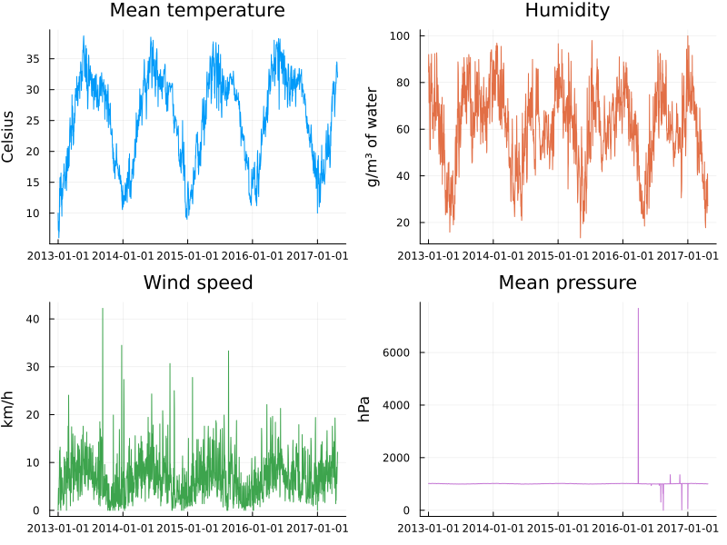
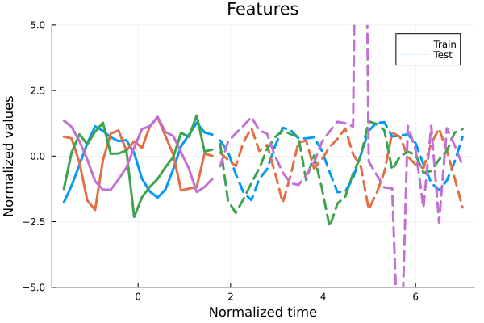
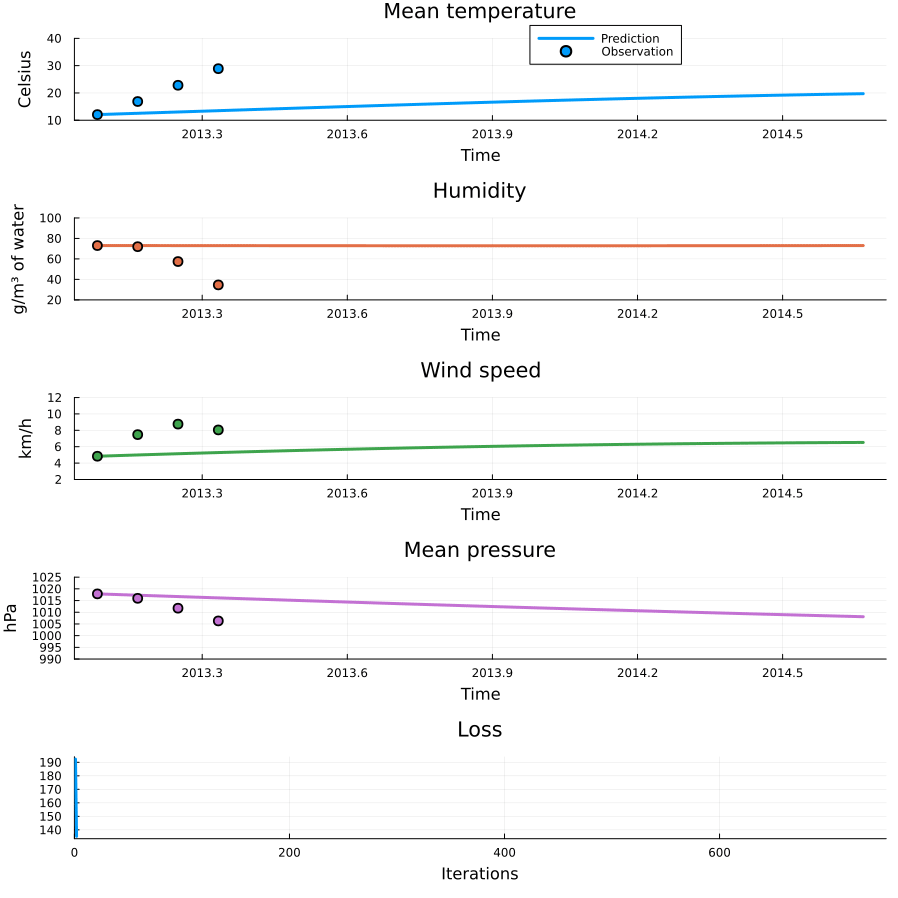
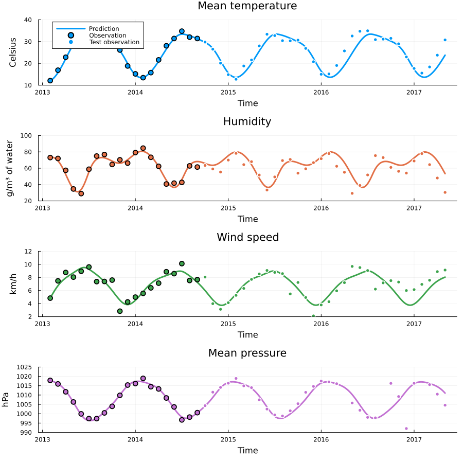

Weather forecasting with neural ODEs
In this example we are going to apply neural ODEs to a multidimensional weather dataset and use it for weather forecasting. This example is adapted from Forecasting the weather with neural ODEs - Sebatian Callh personal blog.
The data
The data is a four-dimensional dataset of daily temperature, humidity, wind speed and pressure measured over four years in the city Delhi. Let us download and plot it.
using Random, Dates, Optimization, ComponentArrays, Lux, OptimizationOptimisers, DiffEqFlux,
OrdinaryDiffEq, CSV, DataFrames, Dates, Statistics, Plots
using Downloads: download
function download_data(
data_url = "https://raw.githubusercontent.com/SebastianCallh/neural-ode-weather-forecast/master/data/",
data_local_path = "./delhi")
function load(file_name)
download("$data_url/$file_name", joinpath(data_local_path, file_name))
return CSV.read(joinpath(data_local_path, file_name), DataFrame)
end
mkpath(data_local_path)
train_df = load("DailyDelhiClimateTrain.csv")
test_df = load("DailyDelhiClimateTest.csv")
return vcat(train_df, test_df)
end
df = download_data()| Row | date | meantemp | humidity | wind_speed | meanpressure |
|---|---|---|---|---|---|
| Date | Float64 | Float64 | Float64 | Float64 | |
| 1 | 2013-01-01 | 10.0 | 84.5 | 0.0 | 1015.67 |
| 2 | 2013-01-02 | 7.4 | 92.0 | 2.98 | 1017.8 |
| 3 | 2013-01-03 | 7.16667 | 87.0 | 4.63333 | 1018.67 |
| 4 | 2013-01-04 | 8.66667 | 71.3333 | 1.23333 | 1017.17 |
| 5 | 2013-01-05 | 6.0 | 86.8333 | 3.7 | 1016.5 |
FEATURES = [:meantemp, :humidity, :wind_speed, :meanpressure]
UNITS = ["Celsius", "g/m³ of water", "km/h", "hPa"]
FEATURE_NAMES = ["Mean temperature", "Humidity", "Wind speed", "Mean pressure"]
function plot_data(df)
plots = map(enumerate(zip(FEATURES, FEATURE_NAMES, UNITS))) do (i, (f, n, u))
plot(df[:, :date], df[:, f]; title = n, label = nothing,
ylabel = u, size = (800, 600), color = i)
end
n = length(plots)
plot(plots...; layout = (Int(n / 2), Int(n / 2)))
end
plot_data(df)
The data show clear annual behaviour (it is difficult to see for pressure due to wild measurement errors but the pattern is there). It is concievable that this system can be described with an ODE, but which? Let us use an network to learn the dynamics from the dataset. Training neural networks is easier with standardised data so we will compute standardised features before training. Finally, we take the first 20 days for training and the rest for testing.
function standardize(x)
μ = mean(x; dims = 2)
σ = std(x; dims = 2)
z = (x .- μ) ./ σ
return z, μ, σ
end
function featurize(raw_df, num_train = 20)
raw_df.year = Float64.(year.(raw_df.date))
raw_df.month = Float64.(month.(raw_df.date))
df = combine(groupby(raw_df, [:year, :month]),
:date => (d -> mean(year.(d)) .+ mean(month.(d)) ./ 12),
:meantemp => mean, :humidity => mean, :wind_speed => mean,
:meanpressure => mean; renamecols = false)
t_and_y(df) = df.date', Matrix(select(df, FEATURES))'
t_train, y_train = t_and_y(df[1:num_train, :])
t_test, y_test = t_and_y(df[(num_train + 1):end, :])
t_train, t_mean, t_scale = standardize(t_train)
y_train, y_mean, y_scale = standardize(y_train)
t_test = (t_test .- t_mean) ./ t_scale
y_test = (y_test .- y_mean) ./ y_scale
return (
vec(t_train), y_train, vec(t_test), y_test, (t_mean, t_scale), (y_mean, y_scale))
end
function plot_features(t_train, y_train, t_test, y_test)
plt_split = plot(reshape(t_train, :), y_train'; linewidth = 3, colors = 1:4,
xlabel = "Normalized time", ylabel = "Normalized values",
label = nothing, title = "Features")
plot!(plt_split, reshape(t_test, :), y_test'; linewidth = 3,
linestyle = :dash, color = [1 2 3 4], label = nothing)
plot!(plt_split, [0], [0]; linewidth = 0, label = "Train", color = 1)
plot!(plt_split, [0], [0]; linewidth = 0, linestyle = :dash,
label = "Test", color = 1, ylims = (-5, 5))
end
t_train, y_train, t_test, y_test, (t_mean, t_scale), (y_mean, y_scale) = featurize(df)
plot_features(t_train, y_train, t_test, y_test)
The dataset is now centered around 0 with a standard deviation of 1. We will ignore the extreme pressure measurements for simplicity. Since they are in the test split they won't impact training anyway. We are now ready to construct and train our model! To avoid local minimas we will train iteratively with increasing amounts of data.
function neural_ode(t, data_dim)
f = Chain(Dense(data_dim => 64, swish), Dense(64 => 32, swish), Dense(32 => data_dim))
node = NeuralODE(f, extrema(t), Tsit5(); saveat = t, abstol = 1e-6, reltol = 1e-3)
rng = Xoshiro(0)
p, state = Lux.setup(rng, f)
return node, ComponentArray(p), state
end
function train_one_round(node, p, state, y, opt, maxiters, rng, y0 = y[:, 1]; kwargs...)
predict(p) = Array(node(y0, p, state)[1])
loss(p) = sum(abs2, predict(p) .- y)
adtype = Optimization.AutoZygote()
optf = OptimizationFunction((p, _) -> loss(p), adtype)
optprob = OptimizationProblem(optf, p)
res = solve(optprob, opt; maxiters = maxiters, kwargs...)
res.minimizer, state
end
function train(t, y, obs_grid, maxiters, lr, rng, p = nothing, state = nothing; kwargs...)
log_results(ps, losses) = (state, loss) -> begin
push!(ps, copy(state.u))
push!(losses, loss)
false
end
ps, losses = ComponentArray[], Float32[]
for k in obs_grid
node, p_new, state_new = neural_ode(t, size(y, 1))
p === nothing && (p = p_new)
state === nothing && (state = state_new)
p,
state = train_one_round(node, p, state, y, OptimizationOptimisers.AdamW(lr),
maxiters, rng; callback = log_results(ps, losses), kwargs...)
end
ps, state, losses
end
rng = MersenneTwister(123)
obs_grid = 4:4:length(t_train) # we train on an increasing amount of the first k obs
maxiters = 150
lr = 5e-3
ps, state, losses = train(t_train, y_train, obs_grid, maxiters, lr, rng; progress = true)(ComponentArrays.ComponentArray[(layer_1 = (weight = Float32[-0.7645059 0.53793734 0.39337653 0.70219153; -0.07752936 -0.15911278 -0.7899115 -0.54955494; … ; -0.49703807 0.2862404 0.17134601 0.12848014; 0.12155315 -0.079533935 -0.21581413 -0.6378495], bias = Float32[0.17611152, -0.3398568, 0.47946006, 0.0011358261, -0.369452, -0.48125637, -0.14892167, 0.36018282, 0.23786569, 0.15563601 … 0.32014894, -0.34898245, 0.3859067, -0.4593916, -0.33226132, 0.26252872, 0.3789305, 0.20379025, -0.10364276, 4.684925f-5]), layer_2 = (weight = Float32[0.14405736 0.18788297 … 0.09533301 0.20118886; 0.07223731 0.20376958 … 0.1997639 0.17007011; … ; 0.12802728 -0.021456784 … -0.09562197 -0.17657918; -0.104789555 -0.11612058 … 0.053488962 -0.111916974], bias = Float32[-0.09538478, -0.014825672, 0.117425635, -0.10896616, 0.109270275, -0.012288272, -0.06560917, 0.050810307, 0.005339995, 0.039113745 … -0.0020065606, -0.042473897, -0.09489921, -0.0010632724, -0.013844758, -0.022791013, 0.01943487, -0.016084298, -0.08688739, -0.013523743]), layer_3 = (weight = Float32[-0.29617885 0.06500828 … -0.27692604 -0.2488153; -0.2784669 0.05598557 … -0.13869432 0.09098109; 0.12476622 -0.27931806 … 0.09968187 0.2964681; -0.12457438 0.084029615 … -0.011420269 0.08157834], bias = Float32[-0.0956653, 0.15592338, -0.10216346, 0.10081644])), (layer_1 = (weight = Float32[-0.7695059 0.54293734 0.38837653 0.7071915; -0.082529366 -0.15411279 -0.7949115 -0.54455495; … ; -0.50203806 0.2912404 0.16634601 0.13348013; 0.12655315 -0.08453394 -0.21081413 -0.6428495], bias = Float32[0.18111151, -0.3348568, 0.47446007, -0.0038641738, -0.364452, -0.48625636, -0.14392167, 0.36518282, 0.24286568, 0.15063602 … 0.32514894, -0.35398245, 0.3909067, -0.4643916, -0.33726132, 0.2675287, 0.3739305, 0.19879025, -0.09864276, -0.00495315]), layer_2 = (weight = Float32[0.13905737 0.19288297 … 0.09033301 0.20618886; 0.06723731 0.20876957 … 0.1947639 0.1750701; … ; 0.12302727 -0.016456783 … -0.100621976 -0.17157918; -0.09978955 -0.12112058 … 0.05848896 -0.11691698], bias = Float32[-0.10038478, -0.019825673, 0.11242563, -0.103966154, 0.10427027, -0.017288271, -0.070609175, 0.055810306, 0.00033999514, 0.044113744 … 0.0029934393, -0.0374739, -0.09989921, -0.0060632722, -0.018844757, -0.027791012, 0.014434869, -0.011084299, -0.09188739, -0.008523743]), layer_3 = (weight = Float32[-0.30117884 0.060008284 … -0.27192605 -0.2538153; -0.2734669 0.06098557 … -0.14369431 0.09598109; 0.11976622 -0.28431806 … 0.10468187 0.2914681; -0.119574375 0.08902962 … -0.016420268 0.08657834], bias = Float32[-0.090665296, 0.15092339, -0.09716345, 0.09581644])), (layer_1 = (weight = Float32[-0.77415794 0.54744697 0.3836119 0.7118782; -0.082470536 -0.15390255 -0.7946522 -0.5445939; … ; -0.5062749 0.2953534 0.16202132 0.13775234; 0.13154188 -0.08946696 -0.20580809 -0.6478454], bias = Float32[0.1859277, -0.33550912, 0.46965417, -0.008857113, -0.36131158, -0.4903583, -0.13918692, 0.36736962, 0.24776426, 0.14653559 … 0.3221644, -0.35883018, 0.3957265, -0.46921173, -0.34183937, 0.27211842, 0.3694645, 0.19404387, -0.094268456, -0.009955538]), layer_2 = (weight = Float32[0.13504222 0.19667664 … 0.08633277 0.21026765; 0.062326834 0.21348846 … 0.18984067 0.1799343; … ; 0.11887717 -0.012407768 … -0.104741804 -0.16734572; -0.09581976 -0.12482073 … 0.06242792 -0.12096606], bias = Float32[-0.10437781, -0.024525829, 0.10862694, -0.09903822, 0.099480204, -0.017103007, -0.07427631, 0.06058006, -0.0041402667, 0.04891845 … 0.007930087, -0.032764755, -0.104080245, -0.010771485, -0.023789186, -0.032437388, 0.009640757, -0.006466028, -0.09617484, -0.0045383754]), layer_3 = (weight = Float32[-0.30573422 0.0554925 … -0.26799142 -0.25848314; -0.26893377 0.06547372 … -0.14753108 0.10064726; 0.11475992 -0.28932476 … 0.10918424 0.2864823; -0.11490817 0.09365396 … -0.020457609 0.09133516], bias = Float32[-0.08611815, 0.14637937, -0.09215812, 0.091161616])), (layer_1 = (weight = Float32[-0.7784472 0.5514358 0.37913775 0.71622545; -0.0805904 -0.15524928 -0.792524 -0.54649013; … ; -0.50989956 0.29877883 0.15827593 0.1414288; 0.13651451 -0.094275 -0.20080206 -0.65280724], bias = Float32[0.19051373, -0.3380075, 0.4647567, -0.013837405, -0.3582967, -0.49362695, -0.13478616, 0.36459637, 0.25248504, 0.14325428 … 0.3182262, -0.36321783, 0.4003107, -0.47369504, -0.345822, 0.2763524, 0.36554664, 0.18921791, -0.090440065, -0.014952682]), layer_2 = (weight = Float32[0.1314511 0.2002193 … 0.082776226 0.21400695; 0.05750185 0.21832521 … 0.18504572 0.18475854; … ; 0.115331784 -0.008962317 … -0.1082444 -0.16367407; -0.092612274 -0.12762693 … 0.06561293 -0.12426508], bias = Float32[-0.1081068, -0.029363412, 0.10495155, -0.094359264, 0.09494208, -0.014072283, -0.076658204, 0.06506586, -0.0081013, 0.052774165 … 0.012571787, -0.028363757, -0.10738469, -0.015115489, -0.028451696, -0.036862597, 0.0051993458, -0.002137383, -0.099933036, -0.0014898488]), layer_3 = (weight = Float32[-0.30989394 0.051404454 … -0.26488325 -0.2627834; -0.265002 0.06933495 … -0.15047744 0.10472585; 0.10977174 -0.29429308 … 0.1127075 0.28150427; -0.11064131 0.097845696 … -0.023676563 0.09569541], bias = Float32[-0.08196931, 0.14241463, -0.08716401, 0.08691494])), (layer_1 = (weight = Float32[-0.78241605 0.5549757 0.37495112 0.7202708; -0.077940784 -0.15720427 -0.78963757 -0.5491844; … ; -0.51308984 0.3017166 0.15495385 0.14468096; 0.14140123 -0.09874973 -0.19587937 -0.65763605], bias = Float32[0.1948654, -0.34122184, 0.4598687, -0.018710908, -0.35452545, -0.4962406, -0.13078839, 0.36091018, 0.2568988, 0.14056459 … 0.31392375, -0.3673283, 0.40463546, -0.47771916, -0.34917292, 0.28029904, 0.3620883, 0.18477328, -0.0870033, -0.019972371]), layer_2 = (weight = Float32[0.12802568 0.20404558 … 0.07942832 0.21769916; 0.05321358 0.22305222 … 0.18085112 0.18896061; … ; 0.1121883 -0.005852232 … -0.111335345 -0.16036643; -0.0899377 -0.12978429 … 0.06828076 -0.12703672], bias = Float32[-0.112008914, -0.034107566, 0.10105312, -0.09007942, 0.09070389, -0.010258551, -0.07810972, 0.069268174, -0.011582746, 0.055399004 … 0.016453253, -0.024214584, -0.1099872, -0.019021593, -0.032520182, -0.04116842, 0.0011478653, 0.0020279842, -0.10336012, 0.0008403931]), layer_3 = (weight = Float32[-0.31376415 0.047627546 … -0.2624018 -0.26678166; -0.26169744 0.072574586 … -0.15284705 0.10813269; 0.1049303 -0.29908773 … 0.11520245 0.2767296; -0.10676504 0.10163139 … -0.026285624 0.09962962], bias = Float32[-0.07811634, 0.13905728, -0.08230431, 0.08307263])), (layer_1 = (weight = Float32[-0.7861062 0.5581502 0.3710307 0.7240585; -0.07489895 -0.15946546 -0.78637594 -0.55230254; … ; -0.515958 0.3042903 0.15195285 0.14761999; 0.14602898 -0.10272893 -0.19125065 -0.6621619], bias = Float32[0.19898708, -0.34476656, 0.4550543, -0.023384739, -0.35033512, -0.498381, -0.12722443, 0.35678074, 0.26090553, 0.13830854 … 0.30957782, -0.37147877, 0.4086851, -0.48124382, -0.3520195, 0.28400025, 0.35900882, 0.18115163, -0.08385005, -0.024922695]), layer_2 = (weight = Float32[0.12473722 0.20820393 … 0.076271966 0.22137818; 0.049699772 0.22735754 … 0.17745769 0.19213648; … ; 0.10934157 -0.00292478 … -0.114120714 -0.15731953; -0.08768775 -0.13130593 … 0.07054728 -0.12936868], bias = Float32[-0.116098024, -0.038429055, 0.09706401, -0.08624281, 0.08677984, -0.006041338, -0.07897367, 0.07321769, -0.014644456, 0.057288878 … 0.019264711, -0.020284362, -0.11208828, -0.02233481, -0.035821836, -0.045342103, -0.002547843, 0.0060935616, -0.10655742, 0.002526204]), layer_3 = (weight = Float32[-0.3174117 0.044088315 … -0.2604195 -0.270527; -0.25897893 0.07525056 … -0.15485258 0.110911235; 0.100432225 -0.30352375 … 0.11699138 0.27240297; -0.103192404 0.10510502 … -0.02842101 0.103227176], bias = Float32[-0.07449646, 0.13626906, -0.07777412, 0.07955015])), (layer_1 = (weight = Float32[-0.7895461 0.56102806 0.36735559 0.7276191; -0.07163592 -0.16191429 -0.7829071 -0.55567515; … ; -0.51856357 0.30657375 0.14921995 0.15030552; 0.15015545 -0.10622231 -0.18713075 -0.6661672], bias = Float32[0.20287816, -0.34847602, 0.450342, -0.027807888, -0.34590483, -0.50019544, -0.124045365, 0.35249966, 0.26451027, 0.1364134 … 0.30553854, -0.3758451, 0.4124585, -0.48432583, -0.35458022, 0.287472, 0.35625482, 0.17806411, -0.080924205, -0.029441295]), layer_2 = (weight = Float32[0.12163746 0.21256724 … 0.0733519 0.22497767; 0.046946913 0.23091725 … 0.1748093 0.19426478; … ; 0.10674489 -0.00012070895 … -0.116649404 -0.15449376; -0.08580994 -0.13209864 … 0.072474346 -0.13127813], bias = Float32[-0.12023462, -0.042123877, 0.09336217, -0.08276929, 0.08314633, -0.0017475043, -0.07952675, 0.076961964, -0.017359897, 0.059187874 … 0.021193268, -0.016577538, -0.113859594, -0.024855513, -0.038422607, -0.04927784, -0.005956726, 0.010064345, -0.10955334, 0.0035783492]), layer_3 = (weight = Float32[-0.32085797 0.040760055 … -0.2588373 -0.27403632; -0.25675762 0.07745437 … -0.15661475 0.11316918; 0.09647894 -0.30742297 … 0.118443884 0.268688; -0.099787794 0.1084 … -0.030130204 0.1066255], bias = Float32[-0.07109056, 0.13396277, -0.07377221, 0.07621078])), (layer_1 = (weight = Float32[-0.7927525 0.5636592 0.36390978 0.7309674; -0.06824794 -0.16448542 -0.77932394 -0.55920476; … ; -0.5209368 0.30861428 0.14672852 0.15276703; 0.15359157 -0.10931408 -0.18359366 -0.6694151], bias = Float32[0.20653158, -0.35226837, 0.44574496, -0.031982314, -0.3416363, -0.501788, -0.12114059, 0.34845567, 0.26780483, 0.1348598 … 0.30220857, -0.3804188, 0.41597092, -0.48707798, -0.35707378, 0.29071638, 0.3537934, 0.1747486, -0.0782031, -0.032907467]), layer_2 = (weight = Float32[0.11878177 0.21691671 … 0.070697054 0.22840019; 0.044836 0.23360927 … 0.17277007 0.19551435; … ; 0.10437736 0.0025547706 … -0.11894586 -0.15187997; -0.08426772 -0.132114 … 0.07410493 -0.1327698], bias = Float32[-0.12420989, -0.04518004, 0.09054291, -0.07952078, 0.07976086, 0.0019068341, -0.07997226, 0.08055008, -0.019802315, 0.061645206 … 0.02268656, -0.013120047, -0.115430854, -0.026447643, -0.040531185, -0.052823886, -0.009151464, 0.013912071, -0.112341285, 0.0040274835]), layer_3 = (weight = Float32[-0.3240967 0.037643626 … -0.25756738 -0.27731013; -0.2549241 0.07928972 … -0.15819074 0.11502431; 0.09320356 -0.3106774 … 0.11983449 0.26561943; -0.09642276 0.111640155 … -0.031406496 0.10994009], bias = Float32[-0.06790516, 0.13203105, -0.070427075, 0.072923645])), (layer_1 = (weight = Float32[-0.79574156 0.5660798 0.3606759 0.7341131; -0.06479695 -0.16713375 -0.775685 -0.5628255; … ; -0.52309865 0.31044638 0.14445823 0.1550231; 0.15631819 -0.11208066 -0.18056786 -0.6717888], bias = Float32[0.20994417, -0.35609704, 0.4412766, -0.035929266, -0.33815476, -0.5032171, -0.11840439, 0.34509158, 0.27089164, 0.13363402 … 0.29988706, -0.38515067, 0.4192472, -0.48960632, -0.35963774, 0.2937368, 0.3515977, 0.17095149, -0.07567599, -0.034928627]), layer_2 = (weight = Float32[0.11619356 0.22092398 … 0.06829985 0.23156938; 0.04324155 0.23551138 … 0.17121628 0.19606708; … ; 0.10222324 0.0050734906 … -0.12102939 -0.1494741; -0.0830229 -0.13143495 … 0.075476505 -0.133873], bias = Float32[-0.12782104, -0.047687534, 0.08897833, -0.076389425, 0.07659159, 0.0041352334, -0.08042742, 0.084016606, -0.022028724, 0.06474154 … 0.024114875, -0.009929766, -0.11688118, -0.027138997, -0.04234918, -0.055867586, -0.012177843, 0.017606178, -0.11491193, 0.0039530206]), layer_3 = (weight = Float32[-0.32711828 0.034743562 … -0.25653687 -0.28035188; -0.25338203 0.08084589 … -0.15960678 0.116571866; 0.09062246 -0.31328544 … 0.121306784 0.263132; -0.09302914 0.11489253 … -0.032247134 0.11322661], bias = Float32[-0.064948715, 0.13037996, -0.06775296, 0.06961754])), (layer_1 = (weight = Float32[-0.7985383 0.5683205 0.3576271 0.737076; -0.06131981 -0.1698291 -0.7720229 -0.5664928; … ; -0.5250728 0.31209943 0.14238362 0.15709467; 0.1584856 -0.114602886 -0.17791773 -0.67344135], bias = Float32[0.21313144, -0.35993537, 0.436965, -0.039643142, -0.33556855, -0.50449854, -0.11579506, 0.34253487, 0.27382255, 0.1326872 … 0.29855743, -0.38998726, 0.422314, -0.49196604, -0.36228624, 0.2965499, 0.3496336, 0.16680568, -0.07332828, -0.035726447]), layer_2 = (weight = Float32[0.11385885 0.2243997 … 0.06613135 0.23447853; 0.042067643 0.23668824 … 0.17005517 0.19604148; … ; 0.10026246 0.0074253213 … -0.122922055 -0.14726232; -0.08203131 -0.13025206 … 0.076623924 -0.13465104], bias = Float32[-0.13098954, -0.049729142, 0.088459, -0.07335011, 0.07364477, 0.0050802696, -0.08091746, 0.0873696, -0.024069471, 0.068300016 … 0.025580436, -0.0069893757, -0.118236385, -0.027119737, -0.043967295, -0.05841312, -0.015030996, 0.021141376, -0.11727281, 0.0034768782]), layer_3 = (weight = Float32[-0.32992962 0.032049794 … -0.25569668 -0.28317922; -0.2520721 0.08217948 … -0.16088562 0.117873885; 0.08864197 -0.31534067 … 0.12288206 0.26111114; -0.089623116 0.1181456 … -0.032703552 0.11647462], bias = Float32[-0.062212717, 0.1289515, -0.06565841, 0.06630551])) … (layer_1 = (weight = Float32[-0.8645457 0.50639266 0.4156212 0.7549828; -0.12436211 0.07260389 -0.9176503 -0.3879254; … ; -0.5511778 0.09842595 0.3393623 0.15594032; 0.22218604 0.39110893 -0.57907057 -0.55113494], bias = Float32[0.20387095, -0.53129023, 0.5706756, -0.39547443, -0.009378857, -0.67247206, 0.178773, 0.21945298, 0.43853238, 0.17467014 … 0.3828816, -0.47842523, 0.4292464, -0.46051675, -0.24017599, 0.07858366, 0.28936708, 0.24752823, 0.07293975, -0.14684679]), layer_2 = (weight = Float32[0.04070326 0.3346676 … 0.026876144 0.5082432; 0.13258459 -0.0023350236 … 0.104449645 0.033090994; … ; 0.11872806 0.09358935 … -0.09433513 -0.23561025; -0.021360368 0.16470547 … 0.21525411 -0.41778702], bias = Float32[-0.23276171, 0.18581474, 0.05933474, 0.12491107, 0.10388294, -0.014645214, -0.14850676, 0.30188775, -0.05727105, 0.2107213 … -0.04316453, 0.06343675, -0.18159994, 0.057455588, 0.108859956, -0.1499626, -0.011668731, 0.10437895, -0.18679965, -0.09680156]), layer_3 = (weight = Float32[-0.2780355 0.01105791 … -0.29878113 -0.37359554; -0.4765153 0.021696283 … -0.15509512 0.307591; 0.27212375 -0.49717352 … 0.22577143 0.23021652; 0.1015912 0.16178025 … -0.0173016 0.17955124], bias = Float32[0.0067527243, 0.0067562317, -0.1682988, 0.019181632])), (layer_1 = (weight = Float32[-0.8646231 0.50635386 0.41569537 0.7550826; -0.124483 0.07255605 -0.9176581 -0.3878561; … ; -0.5513285 0.09854036 0.33938864 0.15613447; 0.22199892 0.39115646 -0.57906055 -0.5510409], bias = Float32[0.20398444, -0.53139234, 0.57071847, -0.39576048, -0.009383601, -0.672577, 0.17885777, 0.21973439, 0.4385719, 0.17482844 … 0.38328394, -0.47843215, 0.42931095, -0.4606125, -0.24015471, 0.0786233, 0.28927922, 0.2475287, 0.0731756, -0.14687371]), layer_2 = (weight = Float32[0.040679686 0.33468682 … 0.026857384 0.50821483; 0.13262577 -0.002304337 … 0.10445813 0.03314082; … ; 0.1187103 0.093645714 … -0.09435808 -0.2356392; -0.021662457 0.16476065 … 0.21503563 -0.41780946], bias = Float32[-0.23279712, 0.18601806, 0.05934464, 0.12498198, 0.10397244, -0.014696762, -0.14866647, 0.30186456, -0.057258576, 0.21081801 … -0.04317143, 0.0635115, -0.18194322, 0.057466548, 0.108867876, -0.14998728, -0.0116121005, 0.10440784, -0.18680972, -0.09691845]), layer_3 = (weight = Float32[-0.27797148 0.011079703 … -0.29881018 -0.3736122; -0.4766039 0.021498542 … -0.15502787 0.30762446; 0.27209395 -0.49734178 … 0.22592568 0.23017567; 0.10159201 0.1617737 … -0.017323157 0.17951685], bias = Float32[0.006756781, 0.0065788515, -0.16852966, 0.019183928])), (layer_1 = (weight = Float32[-0.864702 0.5063159 0.41576844 0.75518423; -0.1246042 0.07250842 -0.9176667 -0.3877861; … ; -0.55148154 0.09865494 0.33941466 0.15633076; 0.2218131 0.39120352 -0.5790497 -0.5509486], bias = Float32[0.20409977, -0.53149414, 0.57076126, -0.3960479, -0.009390562, -0.67268103, 0.17894274, 0.22001159, 0.43861303, 0.17498809 … 0.38368824, -0.47843996, 0.42937696, -0.46070918, -0.24013408, 0.078663856, 0.28919068, 0.24753077, 0.073413074, -0.14690073]), layer_2 = (weight = Float32[0.0406569 0.33470714 … 0.0268395 0.5081856; 0.13266641 -0.0022750495 … 0.10446597 0.033191804; … ; 0.11869322 0.0937039 … -0.09438046 -0.23566765; -0.021966545 0.16481684 … 0.2148145 -0.41783077], bias = Float32[-0.23283282, 0.18622272, 0.05935241, 0.12504941, 0.10406315, -0.014746127, -0.14882672, 0.30184066, -0.057244, 0.2109137 … -0.04317773, 0.06358818, -0.18228428, 0.0574765, 0.10887758, -0.15001172, -0.011555601, 0.10443907, -0.18682043, -0.09703532]), layer_3 = (weight = Float32[-0.2779067 0.011101636 … -0.29884166 -0.37362927; -0.47669217 0.021300117 … -0.15496337 0.3076574; 0.272064 -0.49751002 … 0.22608234 0.23013607; 0.10159412 0.16176772 … -0.017346507 0.17948203], bias = Float32[0.006762636, 0.0064037973, -0.16876163, 0.019187406])), (layer_1 = (weight = Float32[-0.8647814 0.50627804 0.41584072 0.7552867; -0.12472579 0.0724612 -0.91767573 -0.38771552; … ; -0.5516362 0.09876989 0.3394403 0.15652838; 0.22162867 0.3912506 -0.5790384 -0.55085814], bias = Float32[0.20421602, -0.5315955, 0.5708033, -0.39633638, -0.009398929, -0.67278486, 0.17902786, 0.22028522, 0.43865508, 0.1751488 … 0.38409373, -0.47844875, 0.42944357, -0.46080634, -0.2401137, 0.07870522, 0.28910163, 0.24753352, 0.073651485, -0.14692752]), layer_2 = (weight = Float32[0.04063443 0.33472812 … 0.026822006 0.5081558; 0.13270678 -0.0022465317 … 0.104473464 0.03324344; … ; 0.118676715 0.09376312 … -0.09440225 -0.23569612; -0.022271631 0.16487353 … 0.21459195 -0.41785148], bias = Float32[-0.23286882, 0.18642808, 0.05935895, 0.12511499, 0.104154505, -0.014794262, -0.14898741, 0.3018166, -0.057228036, 0.21100858 … -0.043183584, 0.06366559, -0.18262456, 0.057485502, 0.10888821, -0.15003607, -0.011499108, 0.10447139, -0.18683144, -0.09715212]), layer_3 = (weight = Float32[-0.27784106 0.011123888 … -0.2988747 -0.37364665; -0.47678033 0.021101074 … -0.15490021 0.30769002; 0.2720343 -0.4976779 … 0.22624044 0.23009709; 0.10159734 0.1617623 … -0.017371116 0.1794469], bias = Float32[0.0067696692, 0.006229709, -0.16899385, 0.019191716])), (layer_1 = (weight = Float32[-0.86485946 0.50623906 0.4159124 0.7553881; -0.12484708 0.07241437 -0.9176847 -0.38764518; … ; -0.551791 0.098886594 0.33946466 0.15672575; 0.22144473 0.39129934 -0.5790282 -0.55076844], bias = Float32[0.20433135, -0.5316959, 0.5708434, -0.39662504, -0.009406719, -0.6728896, 0.17911203, 0.2205571, 0.43869618, 0.17530902 … 0.38449976, -0.4784579, 0.42950886, -0.4609024, -0.24009314, 0.078748025, 0.289013, 0.24753504, 0.0738895, -0.14695299]), layer_2 = (weight = Float32[0.04061106 0.3347488 … 0.02680338 0.5081266; 0.13274784 -0.0022178693 … 0.10448176 0.033294078; … ; 0.1186595 0.0938219 … -0.09442475 -0.23572472; -0.02257848 0.16492963 … 0.21436831 -0.41787252], bias = Float32[-0.23290461, 0.18663292, 0.05936618, 0.12518111, 0.10424479, -0.014842801, -0.14914924, 0.3017922, -0.0572126, 0.21110368 … -0.04318991, 0.06374155, -0.18296653, 0.057493966, 0.10889772, -0.15006092, -0.011443428, 0.10450264, -0.18684268, -0.09726969]), layer_3 = (weight = Float32[-0.27777475 0.011146758 … -0.29890752 -0.37366349; -0.47686958 0.02090055 … -0.15483598 0.30772316; 0.27200592 -0.49784422 … 0.22639893 0.23005746; 0.101600945 0.16175728 … -0.017395737 0.17941207], bias = Float32[0.0067767696, 0.006054622, -0.16922542, 0.019196186])), (layer_1 = (weight = Float32[-0.8649355 0.50619876 0.41598344 0.7554877; -0.12496815 0.07236824 -0.9176934 -0.3875751; … ; -0.55194527 0.099005476 0.33948752 0.15692225; 0.22126144 0.39135 -0.57901925 -0.5506796], bias = Float32[0.20444511, -0.53179485, 0.5708809, -0.39691314, -0.009413056, -0.6729957, 0.17919537, 0.22082783, 0.43873566, 0.17546873 … 0.38490522, -0.47846726, 0.4295721, -0.46099693, -0.24007224, 0.07879193, 0.2889248, 0.24753441, 0.07412656, -0.14697699]), layer_2 = (weight = Float32[0.04058649 0.33476895 … 0.026783183 0.50809854; 0.13278975 -0.002188658 … 0.10449104 0.033343185; … ; 0.11864167 0.09387969 … -0.09444779 -0.23575367; -0.02288614 0.16498482 … 0.21414462 -0.41789427], bias = Float32[-0.23293994, 0.18683635, 0.059374984, 0.12524934, 0.10433329, -0.014892832, -0.14931199, 0.30176818, -0.057198483, 0.21119934 … -0.043196663, 0.06381496, -0.18331164, 0.057502173, 0.10890523, -0.15008621, -0.011388644, 0.104531646, -0.18685344, -0.09738782]), layer_3 = (weight = Float32[-0.2777079 0.011170208 … -0.2989392 -0.3736798; -0.4769602 0.020698396 … -0.1547693 0.30775684; 0.27197918 -0.49800873 … 0.22655702 0.23001693; 0.10160455 0.16175243 … -0.017419703 0.17937745], bias = Float32[0.006783115, 0.0058770007, -0.16945554, 0.019200256])), (layer_1 = (weight = Float32[-0.8650107 0.5061583 0.41605347 0.7555867; -0.12509009 0.072323546 -0.91770256 -0.3875043; … ; -0.5520997 0.09912548 0.33950952 0.15711871; 0.22108038 0.39140105 -0.5790099 -0.5505937], bias = Float32[0.20455824, -0.53189224, 0.57091576, -0.39720058, -0.009418808, -0.67310256, 0.17927952, 0.22109628, 0.4387747, 0.17562996 … 0.38530868, -0.4784775, 0.42963445, -0.46109125, -0.24005127, 0.07883544, 0.28883582, 0.24753226, 0.07436326, -0.1470007]), layer_2 = (weight = Float32[0.040561743 0.33478925 … 0.026762564 0.50807095; 0.13283142 -0.0021592488 … 0.10450019 0.033391897; … ; 0.11862516 0.0939373 … -0.09446938 -0.23578335; -0.023191541 0.16503988 … 0.21392259 -0.4179163], bias = Float32[-0.23297505, 0.18703836, 0.05938461, 0.12531975, 0.10442083, -0.014944391, -0.14947431, 0.30174628, -0.05718474, 0.21129492 … -0.043202527, 0.06388648, -0.18365957, 0.057510115, 0.108911686, -0.15011103, -0.011333778, 0.104558885, -0.18686244, -0.097504936]), layer_3 = (weight = Float32[-0.2776406 0.011193801 … -0.29897028 -0.37369668; -0.47705096 0.02049554 … -0.15470053 0.30778998; 0.27195325 -0.49817243 … 0.22671448 0.22997664; 0.10160837 0.16174756 … -0.017443353 0.17934223], bias = Float32[0.006788536, 0.0056963325, -0.16968371, 0.019203713])), (layer_1 = (weight = Float32[-0.86508626 0.506119 0.41612202 0.75568634; -0.12521355 0.072280645 -0.91771287 -0.38743216; … ; -0.5522552 0.09924583 0.33953112 0.1573161; 0.22090256 0.39145115 -0.57899874 -0.5505117], bias = Float32[0.2046719, -0.5319881, 0.57094836, -0.39748734, -0.009424971, -0.6732095, 0.17936563, 0.22136128, 0.43881443, 0.1757942 … 0.3857095, -0.47848907, 0.4296971, -0.46118647, -0.24003068, 0.078877605, 0.28874516, 0.24752954, 0.07460036, -0.14702506]), layer_2 = (weight = Float32[0.04053775 0.33481047 … 0.026742538 0.50804317; 0.13287203 -0.002130238 … 0.1045083 0.033441223; … ; 0.11861131 0.0939957 … -0.09448819 -0.2358137; -0.02349313 0.16509561 … 0.21370278 -0.417938], bias = Float32[-0.23301007, 0.18723921, 0.059394088, 0.12539154, 0.10450826, -0.014997, -0.14963527, 0.30172738, -0.057170372, 0.21138984 … -0.04320654, 0.06395721, -0.18400925, 0.05751777, 0.108918145, -0.15013471, -0.011278185, 0.104585335, -0.186869, -0.097619995]), layer_3 = (weight = Float32[-0.277573 0.011217134 … -0.29900154 -0.37371504; -0.47714093 0.020292573 … -0.15463068 0.30782178; 0.27192736 -0.49833614 … 0.22687162 0.22993773; 0.10161264 0.16174251 … -0.017467186 0.17930578], bias = Float32[0.006793229, 0.0055129933, -0.16990995, 0.019206602])), (layer_1 = (weight = Float32[-0.86516225 0.50608116 0.41618878 0.7557866; -0.12533769 0.072239 -0.91772413 -0.38735914; … ; -0.552412 0.099367365 0.33955172 0.15751445; 0.22072704 0.3915009 -0.5789865 -0.5504327], bias = Float32[0.2047862, -0.5320823, 0.57097894, -0.39777303, -0.009431268, -0.6733162, 0.1794528, 0.22162323, 0.4388544, 0.17596051 … 0.38610837, -0.4785012, 0.4297599, -0.461282, -0.24001072, 0.07891923, 0.28865334, 0.24752624, 0.07483783, -0.14704962]), layer_2 = (weight = Float32[0.040514193 0.33483255 … 0.02672259 0.50801575; 0.13291198 -0.0021019366 … 0.10451588 0.033490576; … ; 0.118599035 0.09405499 … -0.09450549 -0.2358439; -0.023793405 0.16515198 … 0.21348329 -0.41795915], bias = Float32[-0.23304456, 0.18743894, 0.0594035, 0.12546389, 0.104595125, -0.015050297, -0.14979553, 0.30171025, -0.05715576, 0.21148454 … -0.043209348, 0.0640274, -0.1843601, 0.057525326, 0.10892434, -0.15015759, -0.011222616, 0.10461137, -0.1868738, -0.09773384]), layer_3 = (weight = Float32[-0.27750522 0.011240213 … -0.2990329 -0.37373427; -0.4772308 0.020088723 … -0.15456022 0.3078526; 0.27190182 -0.49849927 … 0.2270291 0.2299002; 0.101617135 0.1617373 … -0.017491102 0.17926852], bias = Float32[0.0067973956, 0.00532782, -0.17013481, 0.019209053])), (layer_1 = (weight = Float32[-0.86516225 0.50608116 0.41618878 0.7557866; -0.12533769 0.072239 -0.91772413 -0.38735914; … ; -0.552412 0.099367365 0.33955172 0.15751445; 0.22072704 0.3915009 -0.5789865 -0.5504327], bias = Float32[0.2047862, -0.5320823, 0.57097894, -0.39777303, -0.009431268, -0.6733162, 0.1794528, 0.22162323, 0.4388544, 0.17596051 … 0.38610837, -0.4785012, 0.4297599, -0.461282, -0.24001072, 0.07891923, 0.28865334, 0.24752624, 0.07483783, -0.14704962]), layer_2 = (weight = Float32[0.040514193 0.33483255 … 0.02672259 0.50801575; 0.13291198 -0.0021019366 … 0.10451588 0.033490576; … ; 0.118599035 0.09405499 … -0.09450549 -0.2358439; -0.023793405 0.16515198 … 0.21348329 -0.41795915], bias = Float32[-0.23304456, 0.18743894, 0.0594035, 0.12546389, 0.104595125, -0.015050297, -0.14979553, 0.30171025, -0.05715576, 0.21148454 … -0.043209348, 0.0640274, -0.1843601, 0.057525326, 0.10892434, -0.15015759, -0.011222616, 0.10461137, -0.1868738, -0.09773384]), layer_3 = (weight = Float32[-0.27750522 0.011240213 … -0.2990329 -0.37373427; -0.4772308 0.020088723 … -0.15456022 0.3078526; 0.27190182 -0.49849927 … 0.2270291 0.2299002; 0.101617135 0.1617373 … -0.017491102 0.17926852], bias = Float32[0.0067973956, 0.00532782, -0.17013481, 0.019209053]))], (layer_1 = NamedTuple(), layer_2 = NamedTuple(), layer_3 = NamedTuple()), Float32[192.39883, 135.20009, 113.53052, 102.90518, 96.61792, 92.35046, 89.20726, 86.74313, 84.62893, 82.73641 … 5.170771, 5.165719, 5.1606207, 5.1554627, 5.1502414, 5.1449347, 5.1395526, 5.1341095, 5.1286254, 5.1286254])We can now animate the training to get a better understanding of the fit.
function predict(y0, t, p, state)
node, _, _ = neural_ode(t, length(y0))
Array(node(y0, p, state)[1])
end
function plot_pred(t_train, y_train, t_grid, rescale_t, rescale_y,
num_iters, p, state, loss, y0 = y_train[:, 1])
y_pred = predict(y0, t_grid, p, state)
return plot_result(rescale_t(t_train), rescale_y(y_train),
rescale_t(t_grid), rescale_y(y_pred), loss, num_iters)
end
function plot_pred(t, y, y_pred)
plt = Plots.scatter(t, y; label = "Observation")
Plots.plot!(plt, t, y_pred; label = "Prediction")
end
function plot_pred(t, y, t_pred, y_pred; kwargs...)
plot_params = zip(eachrow(y), eachrow(y_pred), FEATURE_NAMES, UNITS)
map(enumerate(plot_params)) do (i, (yᵢ, ŷᵢ, name, unit))
plt = Plots.plot(t_pred, ŷᵢ; label = "Prediction", color = i,
linewidth = 3, legend = nothing, title = name, kwargs...)
Plots.scatter!(plt, t, yᵢ; label = "Observation", xlabel = "Time",
ylabel = unit, markersize = 5, color = i)
end
end
function plot_result(t, y, t_pred, y_pred, loss, num_iters; kwargs...)
plts_preds = plot_pred(t, y, t_pred, y_pred; kwargs...)
plot!(plts_preds[1]; ylim = (10, 40), legend = (0.65, 1.0))
plot!(plts_preds[2]; ylim = (20, 100))
plot!(plts_preds[3]; ylim = (2, 12))
plot!(plts_preds[4]; ylim = (990, 1025))
p_loss = Plots.plot(loss; label = nothing, linewidth = 3, title = "Loss",
xlabel = "Iterations", xlim = (0, num_iters))
plots = [plts_preds..., p_loss]
plot(plots...; layout = grid(length(plots), 1), size = (900, 900))
end
function animate_training(
plot_frame, t_train, y_train, ps, losses, obs_grid; pause_for = 300)
obs_count = Dict(i - 1 => n for (i, n) in enumerate(obs_grid))
is = [min(i, length(losses)) for i in 2:(length(losses) + pause_for)]
@animate for i in is
stage = Int(floor((i - 1) / length(losses) * length(obs_grid)))
k = obs_count[stage]
plot_frame(t_train[1:k], y_train[:, 1:k], ps[i], losses[1:i])
end every 2
end
num_iters = length(losses)
t_train_grid = collect(range(extrema(t_train)...; length = 500))
rescale_t(x) = t_scale .* x .+ t_mean
rescale_y(x) = y_scale .* x .+ y_mean
function plot_frame(t, y, p, loss)
plot_pred(t, y, t_train_grid, rescale_t, rescale_y, num_iters, p, state, loss)
end
anim = animate_training(plot_frame, t_train, y_train, ps, losses, obs_grid)
gif(anim, "node_weather_forecast_training.gif")
Looks good! But how well does the model forecast?
function plot_extrapolation(t_train, y_train, t_test, y_test, t̂, ŷ)
plts = plot_pred(t_train, y_train, t̂, ŷ)
for (i, (plt, y)) in enumerate(zip(plts, eachrow(y_test)))
scatter!(plt, t_test, y; color = i, markerstrokecolor = :white,
label = "Test observation")
end
plot!(plts[1]; ylim = (10, 40), legend = :topleft)
plot!(plts[2]; ylim = (20, 100))
plot!(plts[3]; ylim = (2, 12))
plot!(plts[4]; ylim = (990, 1025))
plot(plts...; layout = grid(length(plts), 1), size = (900, 900))
end
t_grid = collect(range(minimum(t_train), maximum(t_test); length = 500))
y_pred = predict(y_train[:, 1], t_grid, ps[end], state)
plot_extrapolation(rescale_t(t_train), rescale_y(y_train), rescale_t(t_test),
rescale_y(y_test), rescale_t(t_grid), rescale_y(y_pred))
While there is some drift in the weather patterns, the model extrapolates very well!